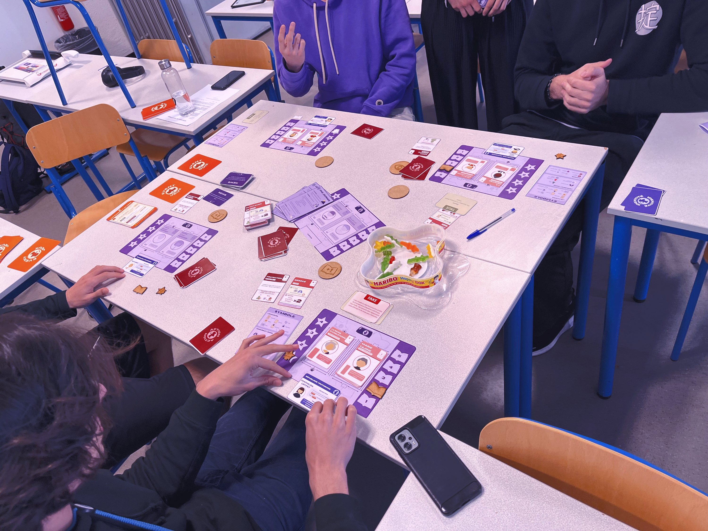
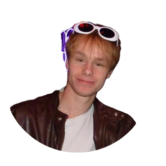
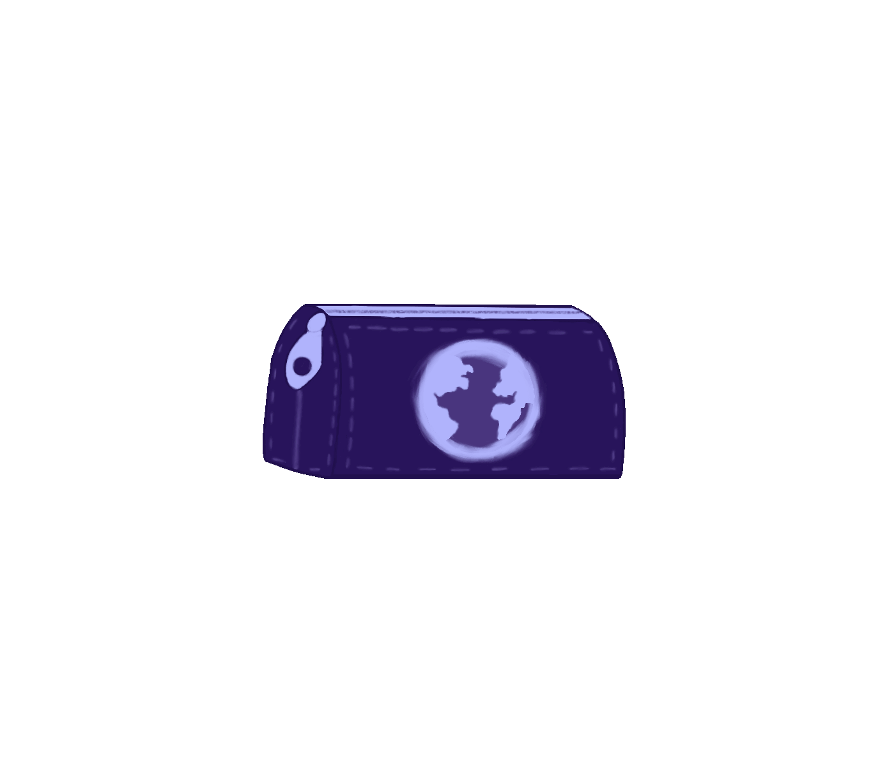

Présentation
TRUTH est un projet de jeu de société réalisé dans le cadre du module Projet Transdisciplinaire de l'ENSC (École Nationale Supérieure de Cognitique). Le jeu sensibilise aux dangers de la diffusion de fausses informations, et le projet inclut une étude scientifique rigoureuse de ses effets.
Le projet a été initié par la tutrice Noémie Chaniaud et le client Tanguy Massart. Ce site présente le jeu, l'étude, ainsi que la gestion et l'historique du projet.
Le jeu
Incarnez une figure d'influence et tentez de diffuser vos informations plus loin que vos adversaires.
Découvrir le jeu
Notre équipe : Les Trousseurs
Quatre étudiants de première année à l'ENSC, aux parcours variés (classe préparatoire MP, BL, licence de sciences cognitives), unis par la passion des jeux de société.


Le projet
Conception du jeu, gestion de projet, historique : tout le déroulé du projet.
Découvrir le projetÉtude scientifique
Les enjeux de l'étude et l'impact mesuré du jeu sur les joueurs.
Découvrir l'étudeAcquis pédagogiques
- Gestion de projet, planification et pilotage d'équipe
- État de l'art sur les biais liés à la désinformation
- Protocoles de test et analyse statistique
- Méthodes de conception centrée utilisateur (questionnaires, grilles d'observation)
- Notions de game design : boucle de jeu, gestion de ressources, charte graphique
- Formation à l'imprimante 3D et à la découpeuse laser à l'Eirlab
